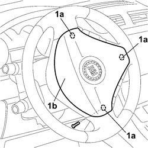
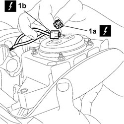
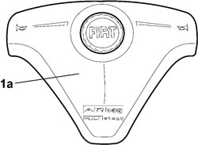

5580C18 AIR BAG MODULE - R+R
- Path
- Procedures > 55 ELECTRICAL EQUIPMENT > 5580 SPECIAL ACCESSORIES > 5580C AIR BAG SYSTEM > 5580C18 AIR BAG MODULE - R+R
- Kind
- repair procedure (removal / refitting; the operation number is the code)
- Applies to
- all engines; all production periods
- Interactive page
- https://sloeber94.github.io/elrnDB-fCrm/en/#/194000804
Applies to: all engines; all production periods
- Turn the ignition key to the OFF position and extract it.
Description | Connector | |
|---|---|---|
Battery |
Applies to: all engines; all production periods
 Removing
Removing
 Refitting
Refitting1. Turn the steering wheel to gain access to the attachment points and then unscrew the bolts (1a) securing air bag module (1b) without fully removing them.

Applies to: all engines; all production periods
1. Remove and turn the air bag module with care, release the safety retainers and disconnect electrical connections (1a) and (1b).
Description | Connector | |
|---|---|---|
1a | DRIVER'S AIR BAG |
Description | Connector | |
|---|---|---|
1b | DRIVER'S AIR BAG |

Applies to: all engines; all production periods
1. Remove the Air Bag module from the vehicle and place it in the special cabinet resting it on a free surface with the bag facing upwards.

Applies to: all engines; all production periods
Refitting
RemovingObserve the following precautions:
- Connect the electrical connection and do up the safety retainers.
Description | Connector | |
|---|---|---|
DRIVER'S AIR BAG |
- Carefully position the air bag module and tighten the bolts.
- Connect the negative and positive battery terminals.
Description | Connector | |
|---|---|---|
BATTERY |
- Check the operation of the system using the Examiner or other diagnostic equipment.
Topics linked from this page (3)
Topics that link to this page (21)
- 3330B02 PEDAL ASSEMBLY - R.R
- 3330B08 PEDAL MOUNT ASSEMBLY - R R AND OVERHAUL WITH FACIA TRIM SUPPORT BEAM REMOVED FOR RIGHT-HAND DRIVE VERSIONS
- 3330B22 BRAKE PEDAL - R+R FOR MANUAL GEARBOX VERSIONS
- 3330B26 CLUTCH PEDAL - R+R
- 3330B38 PEDAL UNIT MOUNT - R.R.
- 4110A10 STEERING WHEEL - R+R FOR REPLACEMENT OR CHECKS
- 5040C10 AIR CONDITIONING CASING - R.R
- 5040C50 AIR CONDITIONING HEATER RADIATOR - R.R.
- 5040C64 A/C EVAPORATOR - R+R
- 5040D80 AIR CONDITIONER SYSTEM WIRING BUNDLE - R R OR REPLACE
- 5040D94 AIR CONDITIONING LEFT UPPER AIR DISTRIBUTION FLAP MOTOR (DEFROST) - R.R
- 5505A41 STEERING WHEEL CONTROL UNIT DIGITAL NETWORK NODE - R.R.
- 5505C10 FRONT CROSSMEMBER WIRING - R.R
- 5505C31 BUILT-IN WIRING UNDER DASHBOARD - R.R.
- 5550A10 STALK UNIT ASSEMBLY - R+R
- 5550A13 <x>TORQUE UNIT ASSEMBLY - R&R FOR VERSIONS WITH ESP</x>
- 5570T66 MODULE (ONE) ON STEERING WHEEL FOR RADIO CONTROL - R+R
- 5580P66 <x>MODULE (ONE) ON STEERING WHEEL CONTROLLING CONNECT PANEL FUNCTIONS - R&R </x>
- 7040A10 DASHBOARD TRIM - R+R
- 7040A97 INSTRUMENT PANEL TRIM SUPPORTING CROSSMEMBER - R.R
- 7095E22 SOUND-PROOF PANEL UNDER DASHBOARD SUPPORTING CROSSMEMBER - R.R.